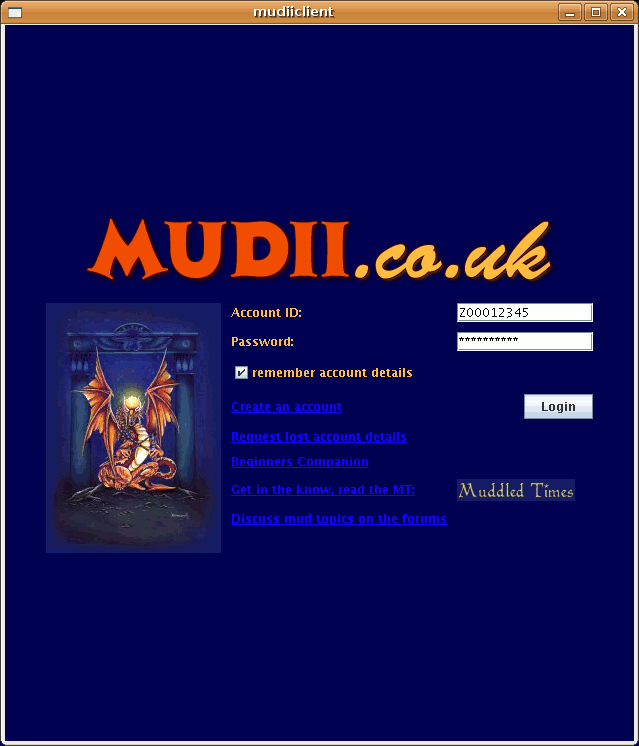
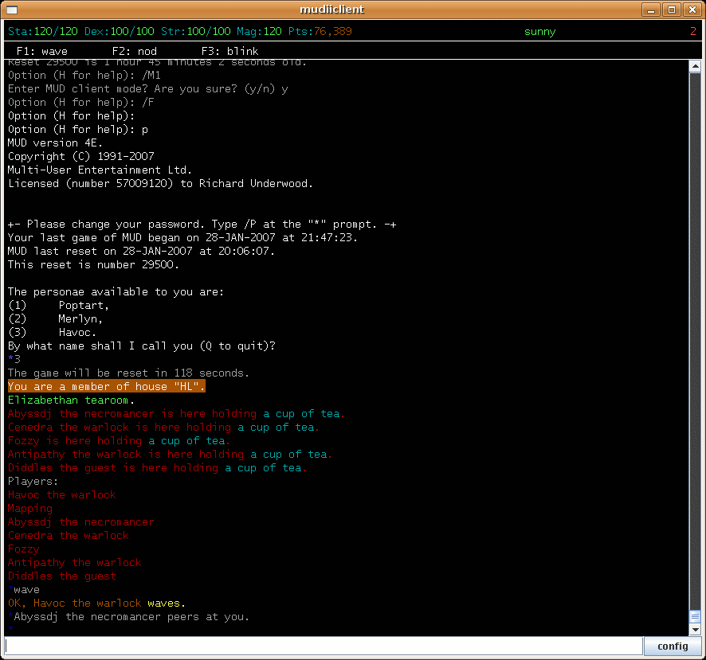
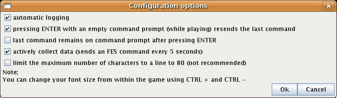
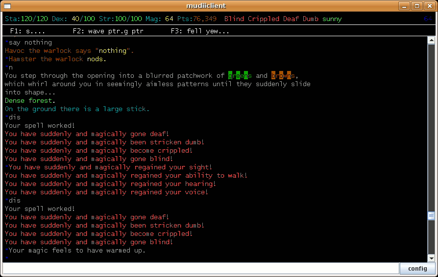
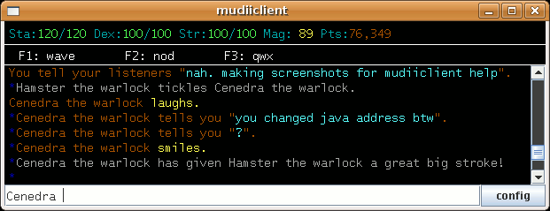
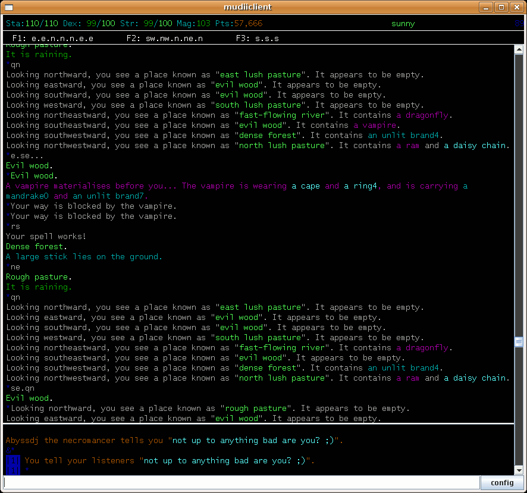

How To Use MUDIIClient
Here's a summary of what I'll be covering. I wrote it to read in order but you might want to skip bits:
Logging In
Once it's installed and then run you will be presented with a login screen:

Here you must enter your account ID that you received when you registered for a new account, and your password. MUDIIClient will remember your login details for you if you let it - by checking the "remember account details" box.
Various helpful links are included on this login screen that you are encouraged to explore by clicking on them.
Once you hit ENTER or click Login, MUDIIClient will switch to a text-only interface. Don't be afraid! MUDIIClient will enter your details for you and get you to the Option (H for Help): prompt. Don't worry about all the text that whizzes up the screen.
If you don't yet have an account you may login as a guest by hitting the Guest Login button. As a guest you'll not be able to score any points or effect the game. It's a good way to see what MUDii is about or pop on for a chat.
What's On The Screen
Here the simplest thing to do is to start playing by entering p (and then ENTER).

NOTE: I already have three "personae" established. If you're new to MUDII you'll need to choose a name to play with (10 letters or less, no spaces, and really only letters: no dashes, numbers, etc.)
Now we're in the game. MUDII tells me I'm a member of house "HL", that I'm in the Elizabethan tearoom, lists the others in here with me, and then goes on to list everyone currently online.
The text colouring is consistent in MUDII, you'll find it very useful as you start to play faster and speed read.
There are various elements to the screen (which I'll go into later). Along the top are your "stats". MUDIIClient will update them as you play.
Along the bottom of the screen is the area where I type my commands. It should behave as you expect. On the right hand side of the screen is a scroll bar which will let you view anything that scrolled off the top of the screen.
Configuring MUDIIClient
In the bottom right corner is a button to bring up the configuration options. If you hit that you'll see something like this:

When "automatic logging" is ticked MUDIIClient will create log files in HTML format every time you play. Unless you're always getting close to your limit on hard drive space you might as well leave this option on - you never know how much you might cherish your record of killing Victim the necromancer!
Some people like MUDIIClient to behave like other programs for playing MUDII with, so I've included the second and third option above, which you're welcome to experiment with - some people swear by them.
"actively collect data" is a subtle option. When enabled, MUDIIClient will send FES commands behind the scenes. This helps it update the status bar on the top of the screen. Without it the status bar would only update when it sees the information appear (e.g. you do a sc or a qs). Hardcore players might feel that this will slow them down and they'd rather the status bar get out of date. Disabling this option is then for them.
This configuration window also alludes to the fact that you can make the text on the screen bigger and smaller using CTRL PLUS and CTRL MINUS respectively. MUDIIClient should have picked the right size for you, but everyone's taste differs.
Ok. More interesting stuff next, honest!
The Status Bar
This screenshot here shows more of what the status bar can do for you:

This screenshot gives away a few of things. First, you have to go north (n) to actually leave the tea room and start playing for real. Second that you can temporarily lose physical abilities you might overwise take for granted! I.e. there's magic in the game too. Here I'm actually using it on myself.
I'll explain what each bit on the status bar means. It's actually very similar to what you'd see if you looked at score or quickscore (sc or qs):
-
Stamina: how much you have / your maximum - if this goes below 1 you die (and I mean die for real - zero points baby).
-
Dexterity: how much you have / your maximum. The higher your dexterity the easier it is to steal things from people, and the harder it is to get hit in a fight. Mine is on 40 here because being blind really lowers it (hint hint).
-
Strength: how much you have / your maximum. Strength is very important. You need a certain amount of it to be able to use certain weapons. You going to find that your strength goes down when you carry heavy things. This is very important because in a fight your strength determines the amount of damage you'll deal to your opponents (too direct to be a hint).
-
Magic: how much you have / your maximum. MUDII lets you cast spells using your magical mana points. If you run out of them you'll lose your magical ability and start using up your stamina points - so keep a keen eye on them! Nobody gets magic for free however. MUDII wants you to put your neck on the link for the privilege. For more info try defn ts.
-
Points: how many you have. Points are all important. As you accrue points you will go up levels. As you go up levels your stamina, dexterity and strength go up. That's about all they'll help you with, though. If you make a mistake (flee from a fight, explode, fall off a cliff, drown etc.) MUDII will take away a fraction of your score. Note "fraction". This is important, it means that making mistakes when your score is low really isn't too much of a heart ache. Make the same mistake as a mage (102,400 points and up) and you'll be much more upset. This is a good thing. It means that getting far in MUDII is a challenge and that each level represents a significant achievement. Try defn point and levels.
-
Blind: if you're blind you can't see. This is very dangerous in a fight as you'll take hits a lot more often.
-
Crippled: if you're crippled you can't move your legs. This is super dangerous in a fight against another player because it'll mean you can't flee the fight AND leave. The consequence being they might kill you dead dead (back down to zero points - ulp!). You can try flee and quit (f.qq) but if they're serious this won't save you. You can resort to superflee for double the penalty (sf) but you'll find that MUDII won't let you do this after you've hit 51,200 points. Best advice? Don't get crippled unless you have a way out of it..
-
Deaf: while you're deaf you won't hear noises including anything people try and tell you. Not dangerous per say.
-
Dumb: while you're dumb you can't speak. So this means no screaming for help..
-
Weather: while I was playing the weather was sunny. As this is a good thing in MUDII, the word shows up in green. Anything in red is generally a bad thing.
-
Minutes to the Next Reset: MUDII works as a series of "resets". When a reset occurs MUDII jumps back in time to 105 minutes ago. Well, sort of. Some things will be subtly different (hehehe). You will however keep your score etc., but not that lovely two-handed-sword.
-
Other secret stuff: I don't want to spoil your fun exploring so I won't tell you what else gets shown on the status bar. Let's just say you'll find them helpful.
Phew! Ok. Now things get quicker to explain, I promise.
Name-Completion Feature
Some people have names that are tricky to type, or maybe you're just plain lazy. MUDIIClient will keep track of people it's seen playing so far this reset and it'll let you press TAB to auto-complete the name you've started typing.
So if I type cen:
and then hit TAB:

It expands it out to "Cenedra " for me. Nice!
Note that ha is enough for, me, Havoc up until Hawumph logs on. Then you're going to need to differential using hav and haw.
Scroll-Back Feature
If you hate using your mouse (as I do) then you can navigate through what's happened so far using PAGEUP and PAGEDOWN instead of clicking on the scroll bar:

Helpfully, MUDIIClient places a "splitter bar" in between what's going on now and what you're paging through. If you like you can change the ratio by clicking and dragging on this "splitter bar".
Shortcuts
Finally, finally, there are a number of helpful keys you can use to speed up your play:
-
UP ARROW or CTRL P: retrieves your previous command.
-
DOWN ARROW or CTRL N: retrieves your next command. This doesn't read your mind! It's only really useful if you've already gone back in your command history.
-
CTRL L: repeats your last command. Very handy for beating up doors with a weapon, or rubbing sticks together (hint, and erm, hint).
-
CTRL D: says your dream word. This is a real spoiler but oh so very handy. Basically the word you get told in your dreams is super handy. This way you don't need to write it down.
-
CTRL C, CTRL V, CTRL X: these are all the standard "clipboard operations" for copying, pasting, and cutting text. Very handy in conjunctions with CTRL LEFT ARROW (give it a try). Note that if you want to copy text from the main area of the screen, just select it with your mouse. It'll get automatically copied to the clipboard.
-
CTRL PLUS, CTRL MINUS: these make the font used by MUDIIClient bigger and smaller.
-
PAGEUP or PAGEDOWN: navigate through the text that scrolled off the screen.
-
ESC: exit out of scrolling back, or clear the current command.
Ok! That's it!